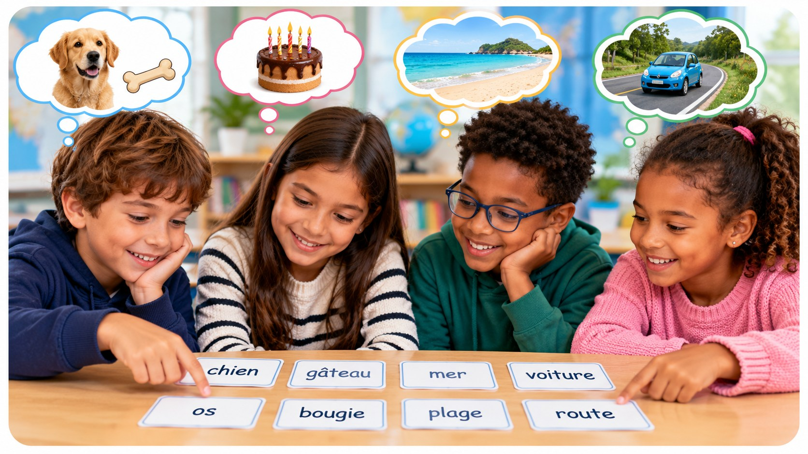

Trois leçons pour apprendre à comprendre, classer et retrouver les mots.
Je regarde la phrase pour comprendre si une expression est imagée.
Je découvre les expressions courantes et je les explique.

Je complète des phrases avec les associations de mots usuelles.